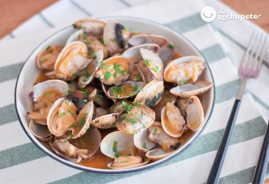

Ingredientes
2 k de almejas limpias de arena (la variedad que más te guste).
2 dientes de ajo
2 cebollas
1 hoja de laurel
75 ml de aceite de oliva virgen extra
2 cucharadas de harina de trigo (en caso de intolerantes al gluten podéis emplear almidón o harina de maíz)
2 cucharadas de perejil picado
2 cucharadas de salsa de tomate casero
1 vaso de vino blanco
Preparación
1.Pelamos las cebollas y los ajos. Quitamos el centro del ajo para que no repita ni pique.
2.Troceamos finamente las cebollas, los dientes de ajo y el trocito de guindilla (si nos os gusta ese toque picante ya sabéis, obviad este ingrediente).
3.Deben quedar trocitos muy pequeñitos, con el fin de que al final del guiso no se aprecie ninguno de los dos ingredientes.
4.Ponemos la cazuela que hemos empleado para hacer las almejas al vapor con el aceite de oliva y añadimos la cebolla y el ajo. Cuando esté todo bien pochado y con un característico color tostado.
5.Añadimos el pimentón dulce y removemos a fuego lento durante 1 minuto. Importante que no se queme o se nos estropeará la salsa.
6.Espolvoreamos la harina en la cazuela y removemos con cuidado para mezclarla bien. El efecto de la harina con la cebolla y sobre todo el aceite se llama Roux, nos ayudará a ligar y espesar la salsa.
7.Dejamos que se cocine tomando algo de color pero sin que se queme. Perfecto, ya tenemos la base de la salsa marinera.
8.Añadimos el vaso de vino blanco. Emplead siempre un buen vino, el mismo que vayáis a beber en la comida, la receta os lo agradecerá.
9.Removemos espesando la salsa y dejando que se evapore el alcohol. Introducimos lo que ha quedado del agua de hacer las almejas al vapor y el tomate frito casero.
10.Dejamos que espese durante unos 10 minutos a fuego medio sin dejar de remover.

Espero que os guste esta receta